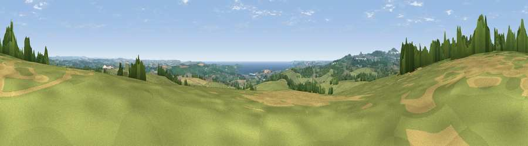

Viewpoint near Lanlivery
#4232 in England · top 9% of its area beats it · near Lanlivery · access?Where it is
The exact computed spot (SX 07125 57638). Click the marker for map links.
Public access: no public right of way or access land is recorded at this exact spot — it may be on private land. Computed from Natural England's CRoW access layer and OpenStreetMap rights of way — not the legal definitive map. Always verify locally.
The view, rendered

A 360° render of this exact spot computed from the terrain model, tree cover and land cover — summer colours, afternoon light, calibrated against photographs of famous viewpoints. Real trees, hedges and buildings will differ in detail.
The panorama
Grey silhouette: terrain skyline in each direction (720 bearings, Earth curvature and refraction included). Dashed green: skyline with trees (+15 m) and buildings (+8 m) as obstacles. Blue strip: how far the ground is visible on each bearing.
Where the view opens
Wedge length = distance to the farthest visible ground on that bearing (vegetation-aware). Rings at 10, 25 and 50 km.
What fills the view
61% grassland · 18% woodland · 11% cropland · 7% water · 3% built-up
Angular shares of the visible panorama (visual magnitude), not map area. Landscape diversity 0.50 (0–1 Shannon).
Key numbers
More beautiful places nearby
The staircase of upgrades: each row has a higher view potential than everything closer. Driving times are estimates from straight-line distance, calibrated against real road routing — check an actual route before setting out.
| Place | Direction | Drive | Score |
|---|---|---|---|
| Viewpoint near Lanlivery | NNE · 3 km | ~8 min | 72.0 |
| Viewpoint near Trethurgy | SW · 5 km | ~11 min | 84.1 |
| Viewpoint near Stenalees | W · 7 km | ~14 min | 88.0 |
| Viewpoint near Crackington Haven | N · 37 km | ~56 min | 88.1 |
| Viewpoint near Combe Martin | NNE · 104 km | ~129 min | 88.9 |
| Holdstone Hill | NNE · 105 km | ~130 min | 90.2 |
| The Knoll | ENE · 149 km | ~172 min | 91.0 |
50.38691, -4.71456 · source: screening · position refined by local search. Computed location — check access rights before visiting.